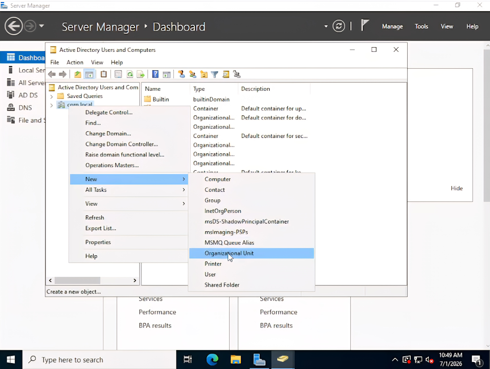
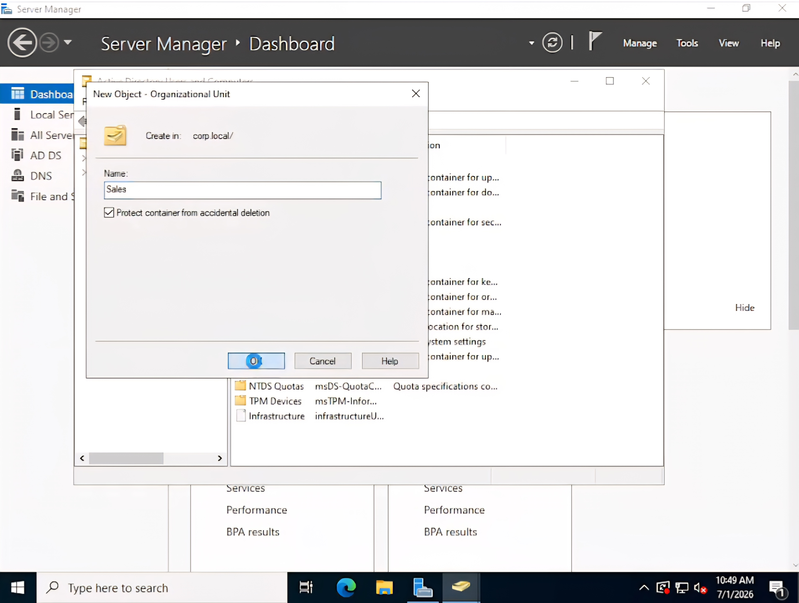
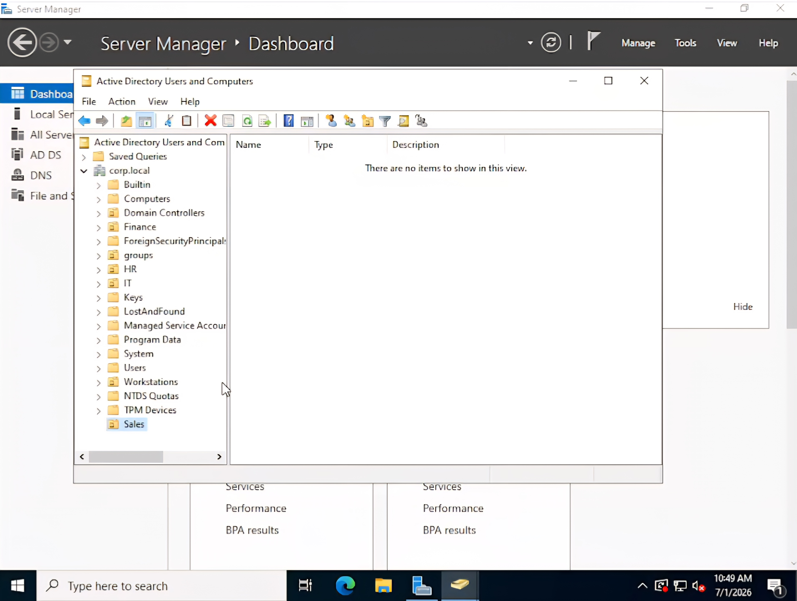

This lab demonstrates the creation and organization of Organizational Units (OUs) within Active Directory Domain Services (AD DS). Organizational Units provide a logical structure for grouping users, computers, and other directory objects, making administration, delegation, and the application of Group Policy more efficient in enterprise Windows environments.
From Active Directory Users and Computers, a new Organizational Unit named Sales is created to provide a dedicated container for department-specific users and resources.

The Sales Organizational Unit is configured with the option to Protect container from accidental deletion, which helps prevent administrators from unintentionally removing critical directory objects.

The newly created Sales Organizational Unit appears within the Active Directory hierarchy, confirming that it has been successfully created and is ready to contain users, groups, and computers.

This lab demonstrates the ability to create and organize Organizational Units within an Active Directory domain. Proper OU design provides a structured directory hierarchy that simplifies administration, supports delegation of control, and enables efficient management of users, groups, computers, and Group Policy throughout an enterprise environment.